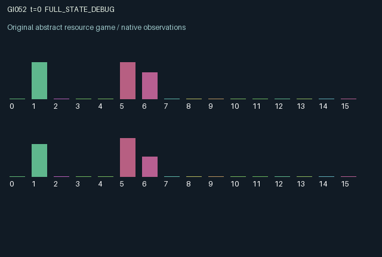

GI052 / LEGACY_ARRAY
astra-d2-00052: perishable bilateral escrow with delayed release rights
2 agents5 actions16 observation columns32 original horizonRuntime: PASS
Release verification episode
Untrained uniform legal actions. Actual JAX state sampled along the full original episode; full-state debug camera. No human performance or learning claim.

Run this game
crucibles play --game 52
Start Python locally, then open the address printed by the terminal. Installation, multiplayer, takeover and keyboard controls →
Objective, rewards & ending
Exact task contract
{
"objective": "Accumulate original per-agent rewards under the interaction rules in mechanism.md.",
"natural_termination": "No early terminal; original t >= 32 horizon.",
"exact_transition_and_reward_source": "def raw_step(self, key, state, actions):\n occupied = state['parcel'] > 0.0\n place = (actions == 1) & (~occupied) & (state['wallet'] >= 0.25)\n amount = jnp.where(place, jnp.minimum(state['wallet'], 0.8), 0.0)\n peer_parcel = jnp.roll(state['parcel'], 1)\n witness = (actions == 2) & (peer_parcel > 0.0) & (jnp.roll(state['age'], 1) >= 1) & (~jnp.roll(state['seal'], 1))\n release = (actions == 3) & occupied & state['seal'] & (state['age'] >= 2)\n recall = (actions == 4) & occupied\n expire = occupied & (state['age'] >= 7) & (~release) & (~recall)\n clear = release | recall | expire\n freshness = jnp.maximum(0.2, 1.0 - 0.08 * state['age'].astype(jnp.float32))\n delivery = jnp.where(release, state['parcel'] * (0.5 + 0.5 * state['quote']) * freshness, 0.0)\n incoming = jnp.roll(delivery, 1)\n recall_amount = jnp.where(recall, state['parcel'], 0.0)\n expired_amount = jnp.where(expire, state['parcel'], 0.0)\n refund = recall_amount * jnp.maximum(0.2, 0.7 - 0.05 * state['age'].astype(jnp.float32))\n parcel = jnp.where(place, amount, jnp.where(clear, 0.0, state['parcel']))\n age = jnp.where(place, 0, jnp.where(parcel > 0.0, jnp.minimum(state['age'] + 1, 8), 0)).astype(jnp.int32)\n seal = (parcel > 0.0) & (~place) & (state['seal'] | jnp.roll(witness, 1))\n fresh_quote = jax.random.uniform(key, (2,), dtype=jnp.float32, minval=0.55, maxval=0.95)\n rewards = jnp.clip(\n 0.65 * delivery\n + 0.25 * incoming * (0.5 + 0.5 * state['demand'])\n + 0.04 * witness.astype(jnp.float32) * peer_parcel\n - 0.04 * amount - 0.06 * recall_amount - 0.10 * expired_amount,\n -1.0, 1.0,\n ).astype(jnp.float32)\n next_state = {\n 't': state['t'] + jnp.array(1, dtype=jnp.int32),\n 'wallet': jnp.clip(state['wallet'] + 0.20 * (actions == 0).astype(jnp.float32) - amount + 0.55 * delivery + refund + 0.10 * expired_amount, 0.0, 2.0),\n 'parcel': parcel,\n 'age': age,\n 'seal': seal,\n 'quote': jnp.where(clear, fresh_quote, state['quote']),\n 'demand': jnp.clip(state['demand'] + 0.03 - 0.25 * incoming, 0.2, 1.0),\n 'reputation': jnp.clip(0.96 * state['reputation'] + 0.10 * delivery + 0.06 * witness.astype(jnp.float32) - 0.05 * expire.astype(jnp.float32), 0.0, 1.0),\n 'last_delivery': delivery,\n 'last_action': actions.astype(jnp.int32),\n }\n done_all = next_state['t'] >= 32\n dones = jnp.stack([done_all, done_all]).astype(jnp.bool_)\n info = {'done_all': done_all, 'legal_mask': self.legal_actions(next_state)}\n return self.observe(next_state), next_state, rewards, dones, info"
}Declared per-step reward bounds: -1.0 to 1.0. Observability: source_defined.
Rules
Original mechanism document (historical status wording retained)
# astra-d2-00052: perishable bilateral escrow with delayed release rights This parentless source proposal combines generic escrow, reciprocal service, and perishable inventory mechanisms. No supplied parent, benchmark source, experiment score, or feedback capsule was used. This description does not establish novelty, nonisomorphism, operational eligibility, compilation, or learning effectiveness. ## Actions and persistent transitions Each agent has a private wallet and quotation, one persistent parcel slot, a parcel age, a release seal, and a private recipient demand. Actions are 0 replenish the wallet, 1 place a parcel, 2 witness the other agent's parcel, 3 release one's own parcel, and 4 recall one's own parcel. All five actions are legal. An unavailable operation has no direct effect, while the normal clock, demand recovery, and parcel aging still occur. Placement requires an empty slot and at least 0.25 wallet units. It locks up to 0.8 units. A witness can seal the partner's existing unsealed parcel only after it has aged at least one tick. Release tests the previous state: a newly issued seal cannot be consumed in that same transition, and a parcel must already be at least two ticks old. Thus one agent's service changes the other's future feasible payoff-producing action. A parcel at age seven expires unless its owner releases or recalls it on that transition. The release amount is attenuated by age and the owner's private quotation. Recall returns an age-dependent fraction; expiry returns only a small fraction. Clearance draws the owner's next private quotation from the explicitly supplied random key. The sender receives partial wallet reimbursement and a delivery reward. The other agent receives an immediate reward from the same delivery, scaled by that recipient's private demand, and its future demand decreases. Waiting rebuilds demand and, with action 0, liquidity. An exponentially decaying public reputation records delivery and witnessing history; it is an observation of history, not an additional gate or payoff multiplier. ## Information and observation columns Each row is from that agent's perspective. The 16 columns are: time/32; own wallet/2; own parcel quantity; own parcel age/8; own release seal; own quotation; own recipient demand; other parcel quantity; other parcel age/8; other seal; own reputation; other reputation; own previous delivery; other previous delivery; own previous action/4; other previous action/4. The other wallet, quotation, and demand are not directly revealed. No observation exposes a future random draw. ## Incentives, delay, and reward bound Replenishing, placing, witnessing, and releasing consume different action opportunities. Witnessing offers a small immediate service reward and enables the partner's delayed release; the owner still controls whether release occurs. Releasing an old parcel loses value, while recalling recovers liquidity without creating the delivery benefit. This creates a reciprocity and timing problem with private values, not a claim that cooperation is necessarily learned or optimal under every state. The reward is the clipped sum of 0.65 times own delivery, 0.25 times incoming delivery times a bounded demand factor, a small witnessing payment, and explicit placement/recall/expiry costs. Every component uses bounded state quantities, and the final `jnp.clip(..., -1.0, 1.0)` sets the declared reward range. Both agents can change persistent state and each other's reward: a witness changes the other release seal; a delivery changes the other's demand and immediate return. ## Interface and evidence status The intended interface is two agents, 16 float32 observation values each, five actions, and a scalar int32 clock incremented once per transition. Both done flags become true at next-state time 32; the returned terminal state and observation are preserved. The info dictionary supplies scalar `done_all` and the next-state legal mask. Source authoring and permitted syntax parsing are separate from isolated validation, duplicate review, mechanism qualification, and any learning result; those remain unestablished here.
Commands
0Save
1Place parcel in escrow
2Witness partner parcel
3Release sealed parcel
4Recall parcel
Roles & abilities
agent_0 Original legacy agent; see mechanism and source
agent_1 Original legacy agent; see mechanism and source
Observation permissions
Training receives only the original observation rows. Role cameras use declared visibility; debug cameras are explicitly marked. Local benchmark records log debug exposure and role takeover history.
Exact observation layout
[
{
"slice": [
0,
16
],
"visibility": "exact original observe() below",
"source_code": "def observe(self, state):\n obs = jnp.zeros((2, 16), dtype=jnp.float32)\n obs = obs.at[:, 0].set(state['t'].astype(jnp.float32) / 32.0)\n obs = obs.at[:, 1].set(state['wallet'] / 2.0)\n obs = obs.at[:, 2].set(state['parcel'])\n obs = obs.at[:, 3].set(state['age'].astype(jnp.float32) / 8.0)\n obs = obs.at[:, 4].set(state['seal'].astype(jnp.float32))\n obs = obs.at[:, 5].set(state['quote'])\n obs = obs.at[:, 6].set(state['demand'])\n obs = obs.at[:, 7].set(jnp.roll(state['parcel'], 1))\n obs = obs.at[:, 8].set(jnp.roll(state['age'], 1).astype(jnp.float32) / 8.0)\n obs = obs.at[:, 9].set(jnp.roll(state['seal'], 1).astype(jnp.float32))\n obs = obs.at[:, 10].set(state['reputation'])\n obs = obs.at[:, 11].set(jnp.roll(state['reputation'], 1))\n obs = obs.at[:, 12].set(state['last_delivery'])\n obs = obs.at[:, 13].set(jnp.roll(state['last_delivery'], 1))\n obs = obs.at[:, 14].set(state['last_action'].astype(jnp.float32) / 4.0)\n obs = obs.at[:, 15].set(jnp.roll(state['last_action'], 1).astype(jnp.float32) / 4.0)\n return obs"
}
]Entity visibility & attributes
[]
Actual verification & provenance
Per-game execution receipt
{
"game": "gi052",
"status": "PASS",
"verification_revision": 2,
"source_sha256": "8845f1d863785c6a04f117b54473f55f5ec9caeca9580c693f5671a43471ba61",
"seed": 20261101,
"runtime": {
"jax": "0.4.38",
"numpy": "1.26.4",
"devices": [
"TFRT_CPU_0"
]
},
"dimensions": {
"num_agents": 2,
"observation_size": 16,
"num_actions": 5,
"max_steps": 32
},
"checks": {
"eager_reset": {
"status": "PASS",
"seconds": 0.6617438793182373
},
"observation_spaces_legal_masks": {
"status": "PASS",
"seconds": 0.12695932388305664
},
"eager_step": {
"status": "PASS",
"seconds": 0.6717338562011719
},
"jit_reset": {
"status": "PASS",
"seconds": 0.38396763801574707
},
"jit_step": {
"status": "PASS",
"seconds": 0.5397746562957764
},
"eager_jit_integer_parity_float_measurement": {
"status": "PASS",
"seconds": 0.0011506080627441406
},
"jit_vmap_reset": {
"status": "PASS",
"seconds": 0.5531730651855469
},
"jit_vmap_step": {
"status": "PASS",
"seconds": 0.34624695777893066
},
"outer_autoreset_api": {
"status": "PASS",
"seconds": 0.953833818435669
},
"full_original_horizon_episode_and_render": {
"status": "PASS",
"seconds": 1.5885429382324219
}
},
"human_scores": null,
"browser_controls": "PENDING",
"failures": [],
"elapsed_seconds": 6.288629770278931,
"float_parity_max_abs": 0.0,
"numerical_parity": "EXACT",
"raw_terminal_absorbing": "NOT_PART_OF_ORIGINAL_LEGACY_CONTRACT",
"terminal_outer_reset": "PASS",
"episode_steps": 32,
"scripted_random_returns": [
0.730023268610239,
0.511147353798151
],
"terminal": true,
"demo_information": "FULL_STATE_DEBUG",
"demo_frames": 33,
"render_roles_checked": 2
}Chromium control verification
{
"game": "gi052",
"status": "PASS",
"human_scores": null,
"engineering": true,
"checks": [
"catalog_selected_and_real_native_reset",
"dom_queue_and_native_step",
"second_participant_ownership_and_native_joint_step",
"all_roles_individually_controllable_no_role_cap",
"explicit_debug_camera",
"release_to_pure_ai_without_reset"
],
"ui_sha256": "15b5861d23b3c42811865c954d5a988280bbfd21cf8e93754be2437a027158c5",
"seconds": 3.6169545650482178
}Original identity and file hashes
{
"id": 52,
"key": "gi052",
"title": "astra-d2-00052: perishable bilateral escrow with delayed release rights",
"summary": "",
"tags": [],
"family": "legacy_array",
"dimensions": {
"num_agents": 2,
"observation_size": 16,
"num_actions": 5,
"max_steps": 32
},
"source_sha256": "8845f1d863785c6a04f117b54473f55f5ec9caeca9580c693f5671a43471ba61",
"manifest_sha256": "af4d4c11e407f2901ab474318330c7724397a9f2e06c7f1eac8eba3eaeb0e7ce",
"files": [
{
"file": "candidate.py",
"sha256": "8845f1d863785c6a04f117b54473f55f5ec9caeca9580c693f5671a43471ba61",
"bytes": 5036,
"origin": "work/exp_2/astra_generation/discovery_v2/initial/candidate_00052/attempt_00/candidate.py"
},
{
"file": "mechanism.md",
"sha256": "c76318a0eed0f105eb4503da547863f342296b25057a834e86e0504c12005cf5",
"bytes": 4159,
"origin": "work/exp_2/astra_generation/discovery_v2/initial/candidate_00052/attempt_00/mechanism.md"
}
],
"original_status": "LEGACY_SOURCE",
"original_saved_replay": false,
"release_validation": "PASS",
"human_scores": null,
"browser_validation": "PASS"
}